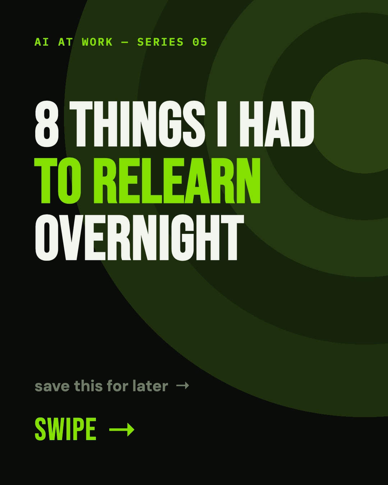
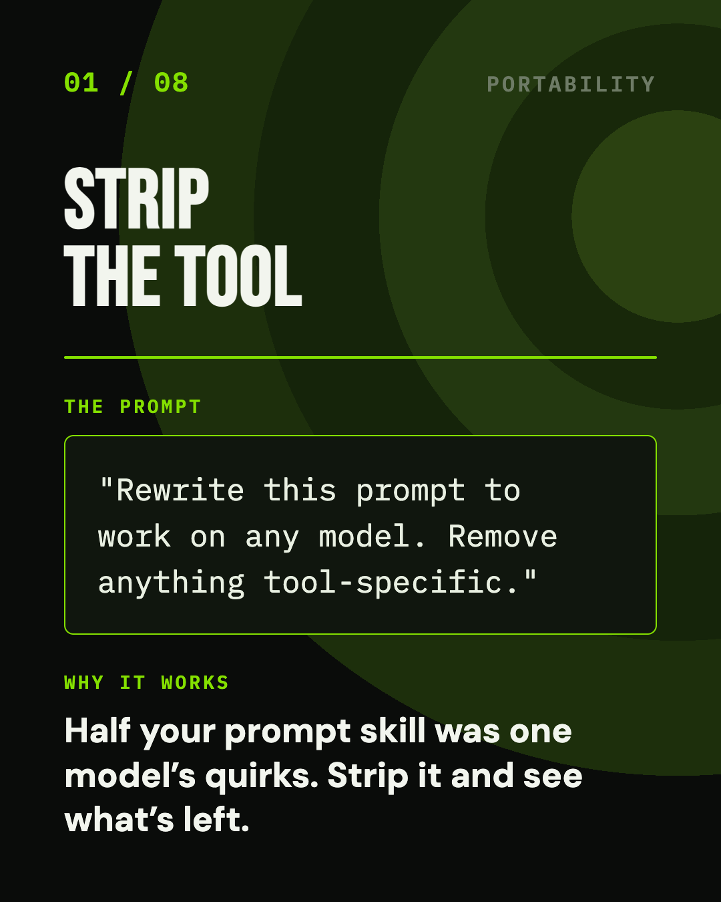
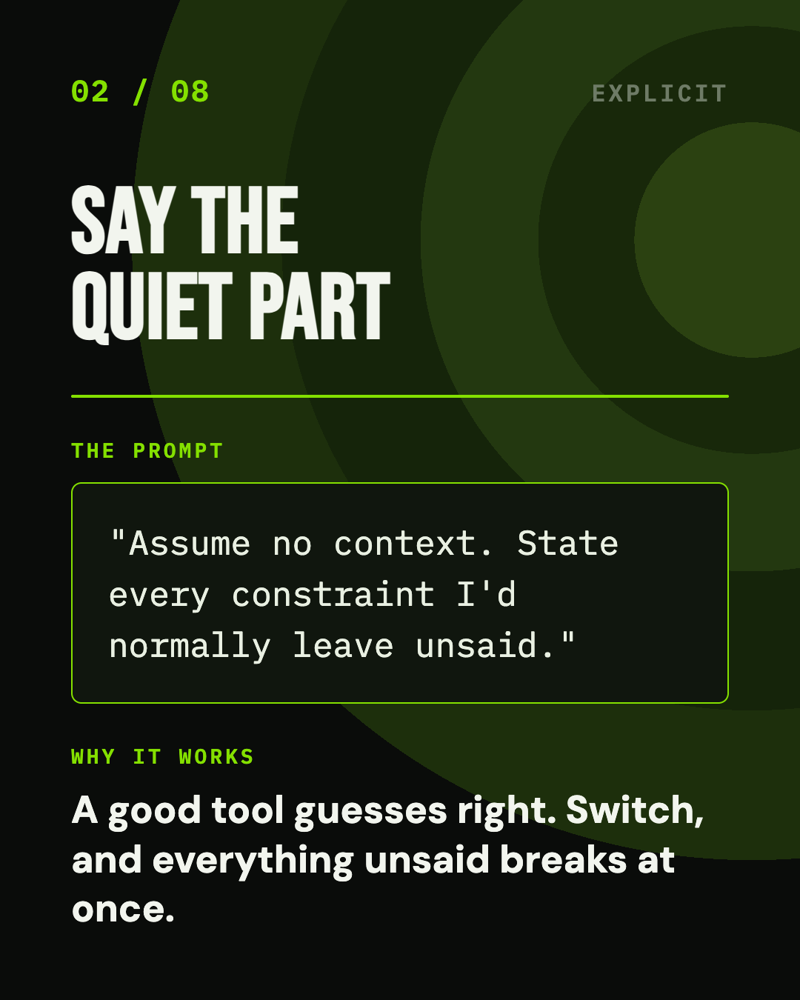
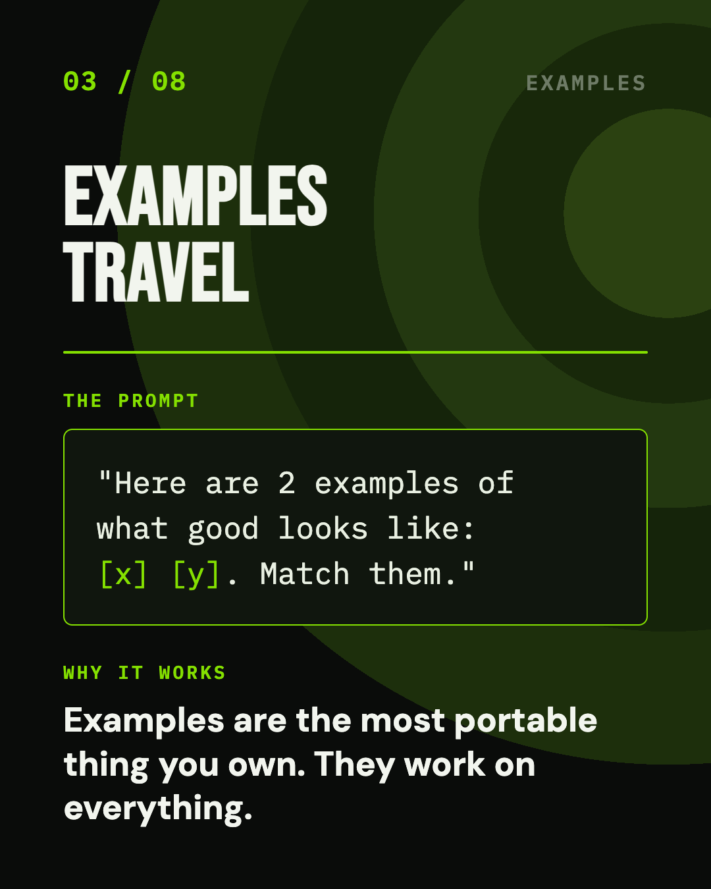
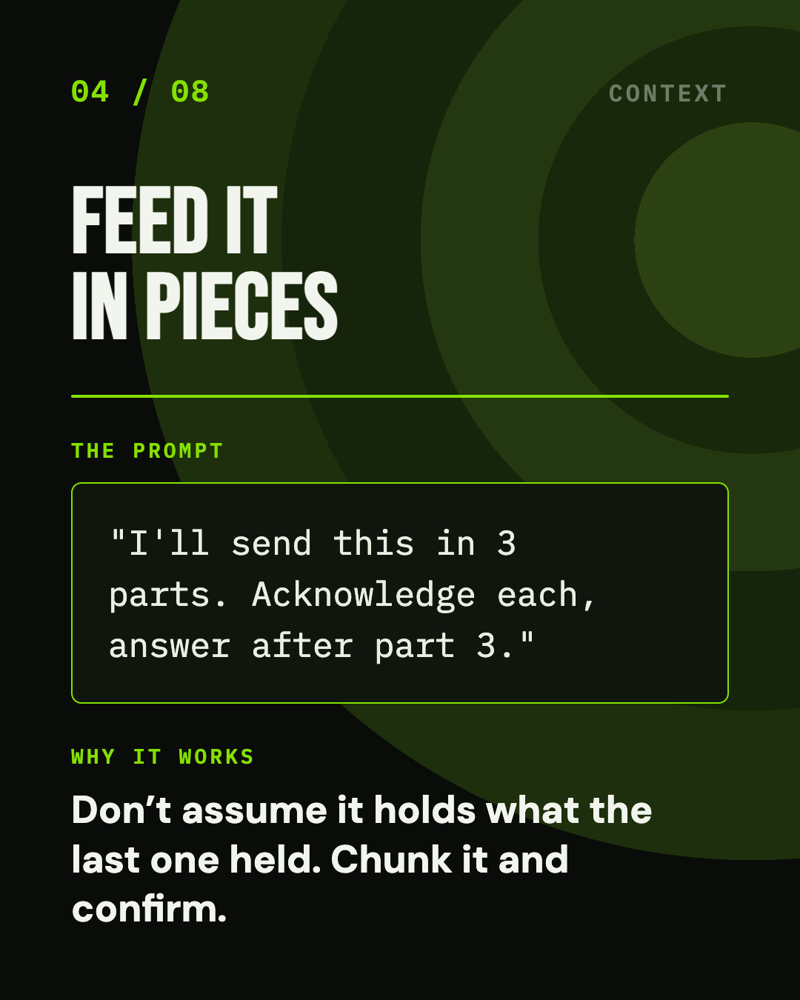
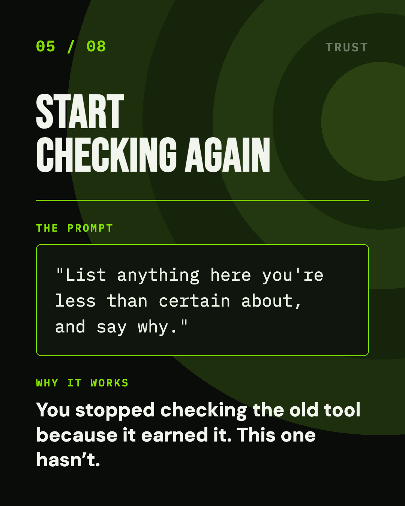
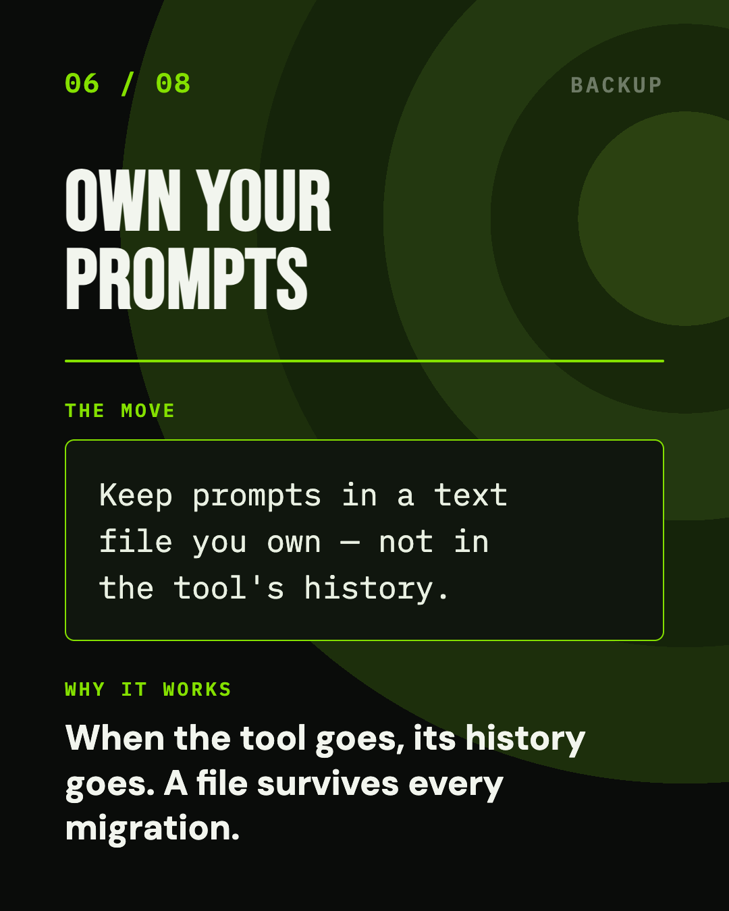
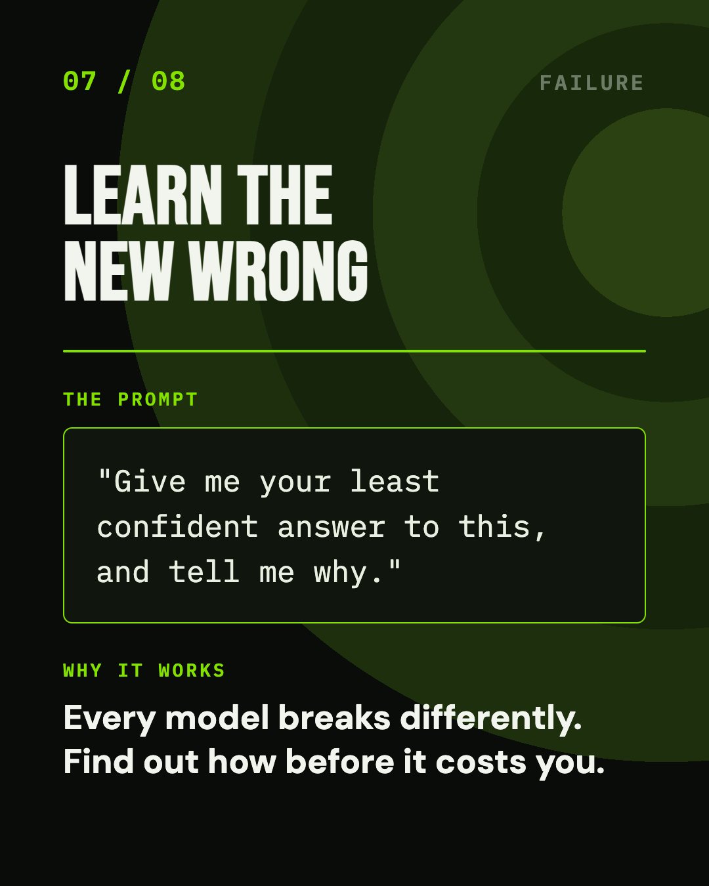
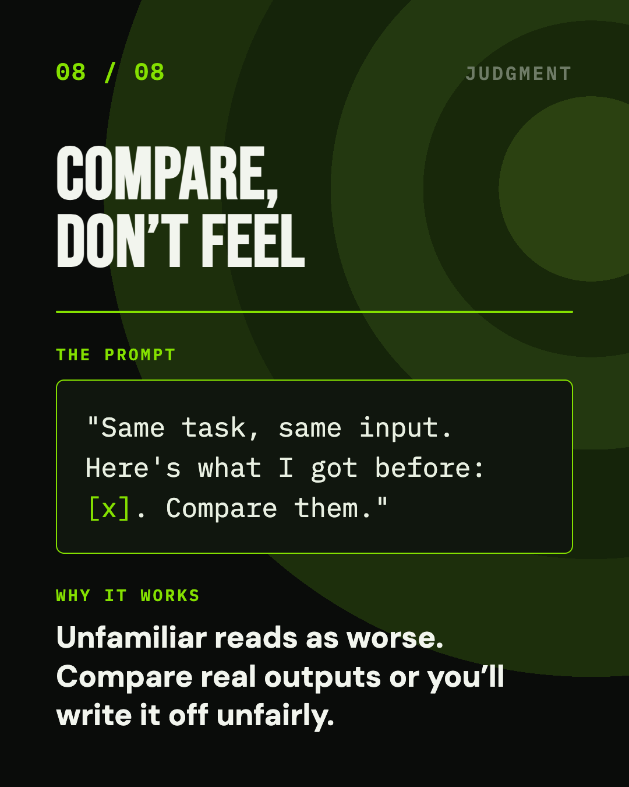
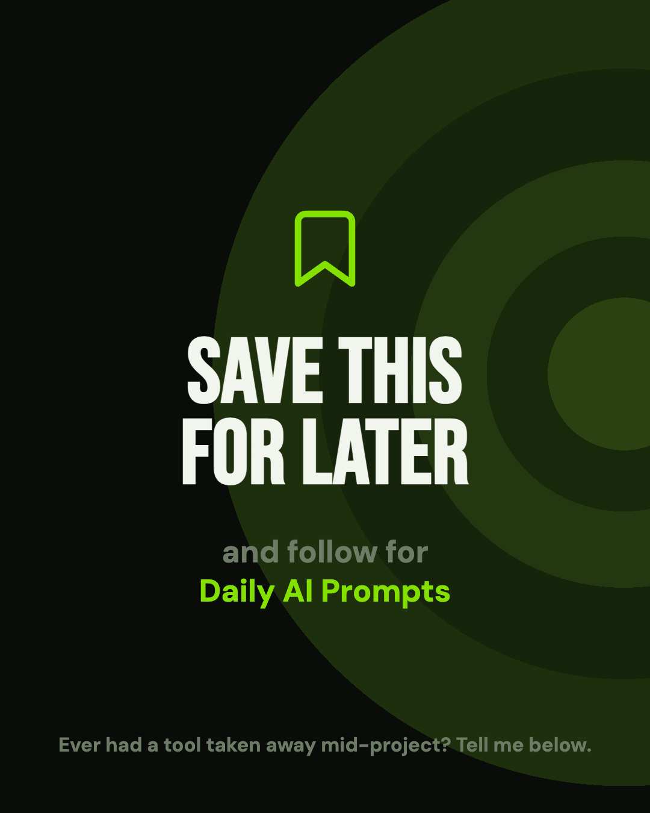

Carousel 05
The Stack I Didn't Choose · Stage 3
July 2026
8 Things I Had to
Relearn Overnight
The policy changed and the external tools were gone. I found out how much of my “prompt skill” was really just muscle memory for one specific model.
R
Ryu Vy
AIToolsDaily24 · By a human, for humans
Stage three: the policy changed. External AI platforms were out, and everything moved to the internal tool.
I'm not going to characterise that decision — it wasn't mine to make and it isn't my business to assess in public. What I can tell you is what it felt like from the desk, because this is the stage most people reading are living in right now. One day a tool is part of how you work. The next day it isn't, and there's no transition period.
The surprise wasn't the disruption. It was discovering how much of what I called "being good at prompting" was really just knowing one specific tool — and finding out which parts came with me and which didn't.
The Eight
Every Lesson, Copy-Paste Ready
01 / 08Portability
Strip the Tool
"Rewrite this prompt to work on any
model. Remove anything tool-specific."
The uncomfortable discovery: a good chunk of what I thought was prompt skill was really muscle memory for one model's quirks — phrasings it happened to like, shorthand it happened to understand. Strip that out and what's left is the part that actually transfers.
02 / 08Explicit
Say the Quiet Part
"Assume no context. State every
constraint I'd normally leave unsaid."
A tool you've used for months guesses right about the things you never bothered to specify. A new one guesses wrong about all of them at once, which is why a switch feels like falling off a cliff. Write down the implicit rules and the cliff mostly disappears.
03 / 08Examples
Examples Travel
"Here are 2 examples of what good
looks like: [x] [y]. Match them."
Instructions are model-specific; examples are universal. Every model, weak or strong, old or new, can pattern-match a sample of the output you want. If you keep one thing portable, keep your examples.
04 / 08Context
Feed It in Pieces
"I'll send this in 3 parts. Acknowledge
each, answer after part 3."
Don't assume the new tool holds what the last one held. Context windows differ wildly and nothing warns you when you've exceeded one — the answer just quietly starts ignoring the beginning. Chunk it and make it confirm receipt.
05 / 08Trust
Start Checking Again
"List anything here you're less than
certain about, and say why."
You stopped double-checking the old tool because it earned that over months. The new one hasn't earned anything. Trust is per-tool and it doesn't transfer — which means going back to a verification habit you'd happily retired.
06 / 08Backup
Own Your Prompts
Keep prompts in a text file you own —
not in the tool's chat history.
The one I wish I'd done before I needed it. When access goes, the history goes with it: every refined prompt, every worked example, every template. A plain text file survives every migration, every policy change, and every tool you'll ever be moved off.
07 / 08Failure
Learn the New Wrong
"Give me your least confident answer
to this, and tell me why."
Every model is wrong in its own particular way — one invents citations, one over-hedges, one quietly drops half your constraints. Find the failure mode deliberately, on something that doesn't matter, rather than discovering it in work you've already shipped.
08 / 08Judgment
Compare, Don't Feel
"Same task, same input. Here's what I
got before: [x]. Compare them."
Unfamiliar reads as worse. For the first week everything new feels clumsy, and it's genuinely hard to tell dislike from a real quality drop. Run the same input through both and compare the actual outputs — sometimes it's worse, often it's just different, and you'll write off a decent tool if you never check.
// The one to do before you need it
Number 6. Keep your prompts in a file you own. Everything else on this list is something you can figure out after a change lands — but the day access is switched off is the day your chat history stops being yours, and you can't retrieve it retroactively. It takes ten minutes to start and it's the only item here with a deadline you don't control.
The Series
Five Eras, None of Them Mine
Three down. The open era, the in-house build, and the lockdown. What comes next is the procurement era — licences start getting bought, and the tooling gets seriously good. Then the stack changes one more time and I have to learn a new editor from scratch.
Five stages, in order, none of them my decision. If your workplace hasn't walked this path yet, there's a reasonable chance it's about to.
The Slides
All Ten, Full Size
The full set at full size. Save the ones you'll actually use — or screenshot the lot.










Ten slides · 1080×1350